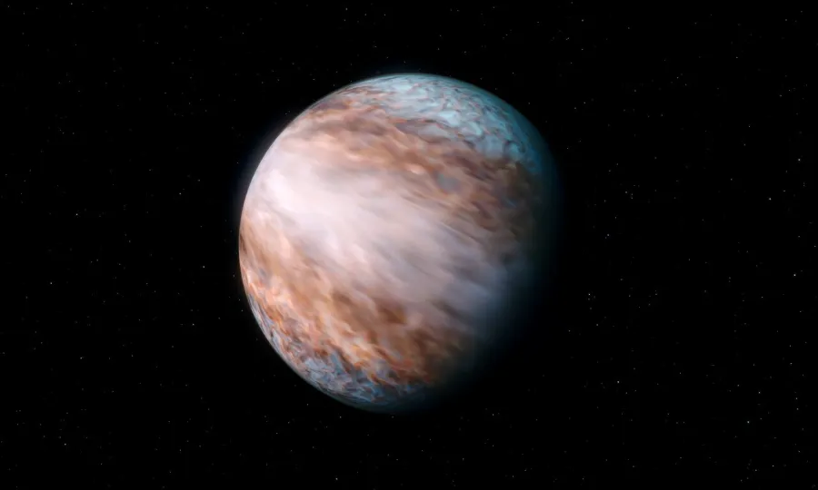

21. Januar 2025
WASP-127 b: Überschallwinde mit 33.000 Kilometern pro Stunde
Auf dem Gasriesen WASP-127 b weht am Äquator ein Jetstream mit rund 9 Kilometern pro Sekunde, also etwa 33.000 Kilometern pro Stunde. Es ist der schnellste Wind dieser Art, der bisher auf einem Planeten gemessen wurde. Zum Vergleich: Der schnellste im Sonnensystem gemessene Wind, auf Neptun, erreicht 1.800 Kilometer pro Stunde.
Gemessen wurde das mit dem Instrument CRIRES+ am Very Large Telescope der ESO. Der mehr als 500 Lichtjahre entfernte Planet ist etwas größer als Jupiter, hat aber nur einen Bruchteil seiner Masse. Das Team fand außerdem Wasserdampf und Kohlenmonoxid sowie kühlere Pole.
Quelle: ESO: "Extreme supersonic winds measured on planet outside our Solar System.", 21.01.2025